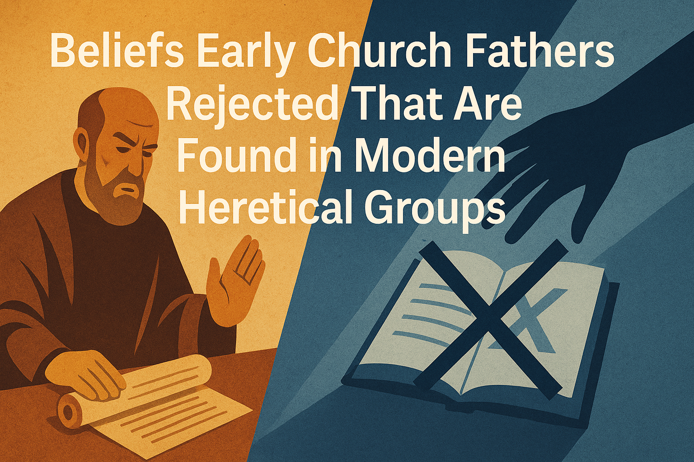

Beliefs Early Church Fathers Rejected That Are Found in Modern Heretical Groups
The importance of understanding the written Word through the lens of the early Church Fathers cannot be overstated. These men were the direct spiritual descendants of the apostles, faithfully preserving and defending the teachings of Christ in the face of heresies that still echo today. To accept the Bible as the Word of God is to acknowledge the work of the Holy Spirit—not just in inspiring Scripture, but in preserving it through those who canonized, taught, and passed it down. If you trust the Holy Spirit to safeguard the text, how can you not trust that same Spirit to guide the men who protected its meaning? Rejecting the voices of the Fathers while accepting the book they protected is not just inconsistent—it opens the door to the very false doctrines they gave their lives to refute.
1. Polytheism / Multiple Gods
Found in: LDS (Mormons)
Irenaeus taught:
There is one uncreated, eternal God who made all things, and Jesus Christ is His only begotten Son. Against Heresies, Book I, ch. 22:1 & III.6.1:
“There is but one God, the Father, and one Christ Jesus, our Lord… not by the angels, nor by any other beings, but by God Himself were all things made.”
“The Church… believes in one God, the Father Almighty… and in one Christ Jesus, the Son of God.”
Bible Back Up
Deuteronomy 4:35 – “The Lord is God; there is no other besides Him.”
Isaiah 43:10 – “Before Me no god was formed, nor shall there be any after Me.”
John 17:3 – “This is eternal life, that they know You, the only true God, and Jesus Christ whom You have sent.”
Colossians 1:16 – “For by Him all things were created, in heaven and on earth…”
Polycarp taught:
There is one true God, and Jesus Christ is His Son and our Savior. Letter to the Philippians, ch. 3 & Martyrdom of Polycarp, ch. 9:
“Away with the atheists!” (referring to the polytheistic Roman crowd)
"Whosoever does not confess that Jesus Christ has come in the flesh is antichrist…”
Bible Back Up
Deuteronomy 6:4 – “Hear, O Israel: The Lord our God, the Lord is one.”
Isaiah 45:5 – “I am the Lord, and there is no other; besides Me there is no God.”
1 Corinthians 8:4 – “We know that ‘an idol has no real existence,’ and that ‘there is no God but one.’”
1 John 2:22–23 – “Who is the liar but he who denies that Jesus is the Christ? This is the antichrist…”
Justin Martyr taught:
There is one true, eternal God who created all things, and Jesus Christ is His divine Logos (Word) made flesh. First Apology, ch. 9 & 13; Second Apology, ch. 6:
“We worship God alone, but we also adore Jesus Christ, the Son of God… the Logos who is inseparable from Him.”
“We are atheists, indeed, as regards your so-called gods, but not with respect to the most true God.”
Bible Back Up
John 1:1,14 – “In the beginning was the Word, and the Word was with God, and the Word was God… and the Word became flesh.”
Acts 17:29–30 – “We ought not to think that the Divine Being is like gold or silver or stone, an image formed by the art and imagination of man.”
Exodus 20:3–4 – “You shall have no other gods before Me. You shall not make for yourself a carved image…”
Ignatius of Antioch taught:
There is one God who manifested Himself through Jesus Christ, fully God and fully man. Letter to the Ephesians, ch. 7 & 18; Letter to the Magnesians, ch. 8:
“There is one Physician… both flesh and spirit, born and unborn, God in man… Jesus Christ our Lord.”
“There is one God, who manifested Himself through Jesus Christ His Son.”
Bible Back Up
1 Timothy 2:5 – “For there is one God, and one mediator between God and men, the man Christ Jesus.”
Colossians 2:9 – “For in Him the whole fullness of deity dwells bodily.”
John 14:9 – “Whoever has seen me has seen the Father.”
Clement of Rome taught:
There is one almighty Creator God, the Father of all, who made the heavens and earth and governs all things in order. 1 Clement, ch. 19–20, 27:
“Let us look steadfastly to the Creator of all things… the heavens move by His direction.”
“This is the way, beloved, in which we find our Savior, even Jesus Christ, the High Priest of our offerings, the defender and helper of our infirmity.”
Bible Back Up
Genesis 1:1 – “In the beginning, God created the heavens and the earth.”
Romans 1:20–23 – “They exchanged the glory of the immortal God for images resembling mortal man and birds and animals and creeping things.”
1 Corinthians 14:33 – “For God is not a God of confusion but of peace…”
They rejected:
They rejected: Early Church Fathers firmly opposed Gnostic teachings that promoted multiple divine emanations or layers of gods. Their writings clearly affirm the Christian belief in one eternal, uncreated God—directly contradicting later doctrines like Mormonism, which teaches the existence of many gods and the potential for humans to become gods.
2. Jesus as a Created Being (Not Fully God)
Found in: Jehovah’s Witnesses, some Hebrew Israelites
Irenaeus taught:
Jesus Christ is eternally begotten of the Father and is fully divine—not a created being. Against Heresies, Book III, ch. 19:
“The Word of God, our Lord Jesus Christ… is one and the same: the only begotten Son of God, who became man for our salvation.”
Bible Back Up
John 1:1–3,14 – “In the beginning was the Word… and the Word was God… and the Word became flesh.”
Colossians 1:15–17 – “By Him all things were created… He is before all things…”
Polycarp taught:
Jesus is the eternal Son of God and our Savior—fully divine and worthy of worship. Letter to the Philippians, ch. 12:
“Now may the God and Father of our Lord Jesus Christ… and Jesus Christ Himself… build you up in faith and truth and love…”
Bible Back Up
Hebrews 13:8 – “Jesus Christ is the same yesterday and today and forever.”
John 10:30 – “I and the Father are one.”
Justin Martyr taught:
Jesus is the divine Logos—preexistent, uncreated, and equal with the Father in power and will. Dialogue with Trypho, ch. 61 & 63:
“The Word, who is the first-born of God, is God.”
“This very God begotten of the Father of all… was born of a virgin, becoming man.”
Bible Back Up
John 1:1 – “In the beginning was the Word, and the Word was with God, and the Word was God.”
Isaiah 9:6 – “For to us a child is born… and He will be called Mighty God, Eternal Father…”
Ignatius of Antioch taught:
Jesus is both fully God and fully man—He is not a created being. Letter to the Ephesians, ch. 7:
“There is one Physician, both flesh and spirit, born and unborn, God in man, true life in death, both of Mary and of God, Jesus Christ our Lord.”
Bible Back Up
Philippians 2:6–11 – “Though He existed in the form of God… every knee will bow…”
1 John 5:20 – “Jesus Christ… He is the true God and eternal life.”
Clement of Rome taught:
Jesus is the divine Lord through whom the universe was created—eternal, not made. 1 Clement, ch. 36:
“Through Him the Master has willed that we should taste immortal knowledge… being partakers of His splendor.”
Bible Back Up
John 8:58 – “Before Abraham was, I AM.”
Hebrews 1:8–10 – “Your throne, O God, is forever and ever… You, Lord, laid the foundation of the earth…”
They rejected:
The early Church Fathers unanimously rejected the claim that Jesus was a created being or lesser deity. They confronted early heresies like Arianism and firmly upheld the eternal, uncreated divinity of Christ. Their writings affirm that Jesus is God incarnate—coequal with the Father, not made, but begotten before all ages. This directly opposes the doctrines held by groups like Jehovah’s Witnesses and some Hebrew Israelites, who deny Christ’s eternal Godhood.
3. Modalism / Oneness Theology
Found in: Oneness Pentecostals, Modalists
Irenaeus taught:
God is triune—Father, Son, and Holy Spirit—each distinct yet united in essence. Against Heresies, Book IV, ch. 20:
“The Church… has received this faith: in one God the Father Almighty… and in one Christ Jesus, the Son of God… and in the Holy Spirit.”
Bible Back Up
Matthew 28:19 – “Baptizing them in the name of the Father and the Son and the Holy Spirit.”
John 14:26 – “The Helper, the Holy Spirit, whom the Father will send in My name…”
2 Corinthians 13:14 – “The grace of the Lord Jesus Christ, and the love of God, and the fellowship of the Holy Spirit…”
Justin Martyr taught:
Jesus is the distinct divine Logos of God, not merely a mode or mask. Dialogue with Trypho, ch. 56:
“That Christ is distinct from God the Father and is the Logos who was with Him… this we declare.”
Bible Back Up
John 1:1 – “In the beginning was the Word, and the Word was with God, and the Word was God.”
Luke 3:21–22 – Jesus is baptized, the Spirit descends, and the Father speaks from heaven—three Persons acting simultaneously.
Ignatius of Antioch taught:
Ignatius affirmed the unity and distinction within the Godhead, naming all three Persons. Letter to the Magnesians, ch. 13:
“Be subject to Jesus Christ, and to the Father, and to the Spirit.”
Bible Back Up
1 Peter 1:2 – “Chosen… by the foreknowledge of God the Father, by the sanctifying work of the Spirit, to obey Jesus Christ.”
Clement of Rome taught:
He clearly references all three Persons in his writings as distinct yet united. 1 Clement, ch. 46:
“Have we not one God, and one Christ, and one Spirit of grace poured upon us?”
Bible Back Up
Ephesians 4:4–6 – “One Spirit… one Lord… one God and Father of all.”
Polycarp taught:
He prayed and acknowledged all three Persons distinctly. Martyrdom of Polycarp, ch. 14:
“I bless You, O God… I praise You through the eternal High Priest, Jesus Christ Your beloved Son, through whom, with Him and the Holy Spirit, be glory now and forever.”
Bible Back Up
John 15:26 – “When the Helper comes, whom I will send… from the Father…”
They rejected:
The early Church Fathers rejected Modalism as a distortion of God’s revealed nature. They affirmed the Trinity: one divine essence in three eternal Persons—Father, Son, and Holy Spirit. This directly refutes the teachings of Oneness Pentecostalism and other modalist groups that deny the personal distinction within the Godhead.
4. Secret Knowledge / Special Revelation
Found in: LDS (extra scriptures), JW (Watchtower), SDA (Ellen G. White visions), British Israelites (hidden identity doctrines)
Irenaeus taught:
Truth is public, apostolic, and preserved in the Church—not hidden in secret codes or revelations. Against Heresies, Book I, ch. 10 & III.4:
“It is not by means of sophistry that truth is maintained, but by Scripture and tradition handed down openly through the succession of bishops.”
“We have learned the plan of our salvation from no one else but from those through whom the Gospel has come to us.”
Bible Back Up
Jude 1:3 – “Contend earnestly for the faith which was once for all handed down to the saints.”
2 Timothy 3:16–17 – “All Scripture is breathed out by God… that the man of God may be complete, equipped for every good work.”
Galatians 1:8–9 – “Even if we… or an angel from heaven should preach to you a gospel contrary… let him be accursed!”
Polycarp taught:
Truth comes from the apostles and Scripture—not new revelations. Letter to the Philippians, ch. 7:
“Stand fast, therefore, in these things and follow the example of the Lord, being firm and unchanging in the faith handed down to us.”
Bible Back Up
2 Peter 1:20–21 – “No prophecy of Scripture comes from someone’s own interpretation.”
Justin Martyr taught:
Truth is revealed through Christ, not private visions or mystical codes. Dialogue with Trypho, ch. 7:
“We have received no other teaching than what we are commanded through the prophets and the Gospel.”
Bible Back Up
John 18:20 – “I have spoken openly to the world… I have said nothing in secret.”
Ignatius of Antioch taught:
The truth is visible in the unity of the Church, not hidden outside of it. Letter to the Smyrnaeans, ch. 6–8:
“Wherever Jesus Christ is, there is the Catholic Church.”
Bible Back Up
1 Corinthians 1:10 – “That you all agree and there be no divisions among you…”
Clement of Rome taught:
Faith must be rooted in what has been handed down, not in novel teachings or exclusive “insight.” 1 Clement, ch. 42:
“The apostles received the Gospel for us from the Lord Jesus Christ; Jesus the Christ was sent from God.”
Bible Back Up
1 Timothy 6:20–21 – “Avoid the profane chatter and contradictions of what is falsely called knowledge…”
They rejected:
The early Church Fathers soundly rejected all forms of hidden revelation, elitist doctrine, and secret knowledge. They stood against Gnosticism and emphasized that the full truth of the Gospel was publicly revealed, preserved in Scripture, and passed down through the apostles. This directly challenges movements like Mormonism, the Watchtower, and other groups claiming special, extra-biblical revelations.
5. Non-Eternal Hell / Soul Sleep
Found in: Jehovah’s Witnesses, Seventh-Day Adventists (SDA)
Irenaeus taught:
The wicked will experience eternal separation from God, and the righteous will enjoy eternal life. Against Heresies, Book V, ch. 27:
“The punishment of those who reject life and do not believe the truth shall be eternal.”
Bible Back Up
Matthew 25:46 – “And these will go away into eternal punishment, but the righteous into eternal life.”
Revelation 14:11 – “The smoke of their torment goes up forever and ever, and they have no rest day and night…”
Polycarp taught:
The ungodly face eternal fire, and the faithful receive incorruptible life. Letter to the Philippians, ch. 2:
“To whom is reserved the blackness of darkness forever… but for the faithful, the grace of incorruptibility.”
Bible Back Up
Mark 9:43–48 – “Where their worm does not die and the fire is not quenched.”
Justin Martyr taught:
The souls of the wicked are conscious and punished eternally. Dialogue with Trypho, ch. 5:
“We believe… that eternal punishment is reserved for the wicked in eternal fire.”
Bible Back Up
Daniel 12:2 – “Some to everlasting life, and some to shame and everlasting contempt.”
Ignatius of Antioch taught:
There is no soul sleep—the righteous live forever in Christ, and the wicked are cut off from Him. Letter to the Magnesians, ch. 5:
“If we do not receive willingly the grace of Christ… we condemn ourselves to eternal separation.”
Bible Back Up
Hebrews 9:27 – “It is appointed for man to die once, and after that comes judgment.”
Clement of Rome taught:
Judgment is real, eternal, and based on one’s deeds. 1 Clement, ch. 28:
“Let us fear the Lord Jesus Christ… for He is able to cast body and soul into hell.”
Bible Back Up
Luke 16:22–26 – The rich man and Lazarus: conscious existence after death with no second chances.
They rejected:
The early Church Fathers flatly rejected the doctrines of soul sleep and non-eternal punishment. They affirmed eternal, conscious judgment for the wicked and everlasting life for the righteous. This directly opposes teachings in Jehovah’s Witnesses and SDA theology, which either deny hell’s duration or deny conscious awareness after death.
6. Strict Torah Keeping / Sabbatarian Legalism
Found in: Seventh-Day Adventists (SDA), Hebrew Israelites
Irenaeus taught:
Righteousness comes by faith, not by the Mosaic Law, which was preparatory. Against Heresies, Book IV, ch. 16:
“The law was our schoolmaster to bring us to Christ… and the observance of the law is now obsolete.”
Bible Back Up
Galatians 3:24–25 – “The Law has become our tutor unto Christ… but now that faith has come, we are no longer under a tutor.”
Colossians 2:16–17 – “Let no one act as your judge in regard to food or drink or in respect to a festival or a new moon or a Sabbath day…”
Polycarp taught:
Righteousness is based on faith in Christ, not Mosaic observance. Letter to the Philippians, ch. 1–3:
“Let us run the race of faith… not turning back to empty talk or the old customs, but to the grace of Christ.”
Bible Back Up
Romans 10:4 – “For Christ is the end of the law for righteousness to everyone who believes.”
Justin Martyr taught:
The Old Covenant laws were temporary and pointed to Christ. Christians are not bound by them. Dialogue with Trypho, ch. 18 & 29:
“We, who have been made righteous by faith in Christ, are not bound to keep the Mosaic law.”
Bible Back Up
Hebrews 8:13 – “He has made the first [covenant] obsolete…”
Ignatius of Antioch taught:
Those who live by the old laws deny Christ's fulfillment of the Law. Letter to the Magnesians, ch. 8–10:
“If we still live according to the Jewish law, we acknowledge that we have not received grace.”
Bible Back Up
Galatians 5:4 – “You who are trying to be justified by law are severed from Christ.”
Clement of Rome taught:
Obedience is now rooted in faith and spiritual sacrifice, not Torah observance. 1 Clement, ch. 32:
“We are not justified by our own wisdom or piety… but by that faith through which God has justified all men from the beginning.”
Bible Back Up
Ephesians 2:15 – “[Christ] abolished in His flesh the enmity, which is the Law of commandments contained in ordinances…”
They rejected:
The early Church Fathers rejected the idea that Christians must follow the Mosaic Law or keep the Sabbath for salvation. They taught that the Law was fulfilled in Christ and is no longer binding under the New Covenant. Legalistic Sabbatarianism and Torah-keeping doctrines found in SDA and Hebrew Israelite theology directly contradict the faith handed down by the apostles.
7. Anglo/British Israelism (Ethnic Exclusivity)
Found in: British Israelites, some Hebrew Israelite sects
Irenaeus taught:
The true Israel of God is those who believe in Christ, not based on ethnicity. Against Heresies, Book IV, ch. 21:
“The Lord has redeemed us by His own blood, and has made us a holy people gathered from every nation.”
Bible Back Up
Galatians 3:28–29 – “There is neither Jew nor Greek… for you are all one in Christ Jesus… heirs according to promise.”
Romans 10:12 – “For there is no distinction between Jew and Greek; for the same Lord is Lord of all…”
Polycarp taught:
He emphasized faith and holiness—not heritage—as marks of God’s people. Letter to the Philippians, ch. 2:
“Let us walk worthily in His commandments, that we may be found numbered among the number of the saved.”
Bible Back Up
Acts 10:34–35 – “God shows no partiality, but in every nation the one who fears Him… is acceptable to Him.”
Justin Martyr taught:
The true people of God are those who follow Christ, not ethnic descendants of Abraham. Dialogue with Trypho, ch. 123:
“We, who have been led to God through this crucified Christ, are the true spiritual Israel.”
Bible Back Up
Romans 9:6–8 – “Not all who are descended from Israel belong to Israel… it is not the children of the flesh who are children of God.”
Ignatius of Antioch taught:
He warned against divisions and affirmed the unity of all believers in Christ. Letter to the Magnesians, ch. 10:
“If we still live according to the old ways of Judaism, we deny the grace of Christ.”
Bible Back Up
Ephesians 2:13–16 – “He has made both one and broken down the dividing wall…”
Clement of Rome taught:
God’s covenant is not based on race but righteousness. 1 Clement, ch. 32:
“We are justified not by our ancestry, but by that faith through which God has justified all people.”
Bible Back Up
Isaiah 56:6–8 – “My house shall be called a house of prayer for all peoples.”
They rejected:
The early Church Fathers strongly rejected any doctrine that claimed salvation or covenant identity was based on ethnicity. They taught that the Church is the new Israel—made up of all nations who are in Christ by faith. Ethnic exclusivity, British Israelism, and similar doctrines are modern distortions of the gospel of grace.
8. Denial of Bodily Resurrection
Found in: Some Gnostic-influenced cults, esoteric New Age
Irenaeus taught:
Resurrection is physical — the same body is raised and transformed. Against Heresies, Book V, ch. 7–13:
“If the body is not saved, then the Lord did not redeem us by His blood… for what He did not assume He did not heal.”
Bible Back Up
1 Corinthians 15:42–44 – “It is sown a perishable body, it is raised an imperishable body…”
Romans 8:11 – “He who raised Christ Jesus from the dead will also give life to your mortal bodies…”
Polycarp taught:
The resurrection is of both body and soul — unto eternal life. Letter to the Philippians, ch. 7:
“He who raised Him from the dead will raise us also, if we do His will and walk in His commandments.”
Bible Back Up
John 5:28–29 – “All who are in the tombs will hear His voice and come out…”
Justin Martyr taught:
The resurrection will be of the flesh — not just the soul. On the Resurrection, ch. 2–9:
“The flesh shall rise again, and the soul shall be reunited to it… this is the doctrine of the resurrection.”
Bible Back Up
Philippians 3:20–21 – “He will transform our lowly body to be like His glorious body…”
Ignatius of Antioch taught:
Jesus truly rose in the flesh, and so will we. Letter to the Smyrnaeans, ch. 2:
“For I know and believe that He was in the flesh even after the resurrection… touch Me and see.”
Bible Back Up
Luke 24:39 – “See My hands and My feet… a spirit does not have flesh and bones as you see that I have.”
Clement of Rome taught:
The resurrection is a promise of renewed life in the flesh. 1 Clement, ch. 24:
“Let us consider the resurrection… how He raises up again those who have served Him in holiness.”
Bible Back Up
Job 19:25–27 – “In my flesh I shall see God…”
They rejected:
The early Church Fathers thoroughly rejected the idea that the resurrection was spiritual only or symbolic. They taught, in unity, that the bodily resurrection of Christ was a historical fact and that all believers will rise bodily at the last day. Gnostic and New Age denials of the physical resurrection are not new — they are ancient errors refuted from the earliest centuries of the Church.